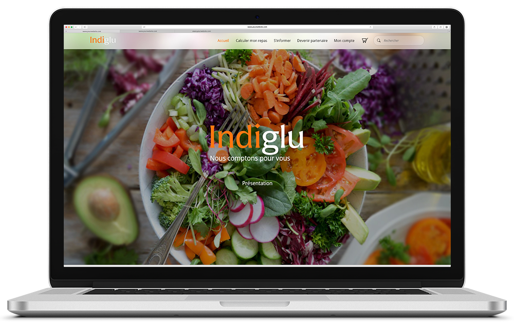

Retour vers le haut
Indiglu est un projet individuel que j'ai réalisé au cours de ma première année du DUT MMI à Montbéliard. Le but de ce projet était de faire une refonte graphique du site Indiglu.
Afin d'y arriver, plusieurs travaux ont été effectués tels qu'un brief, analyse du logo existant, analyse des concurents, création de logo ainsi que la création de la maquette gaphique.
Maquette du site
Si vous voulez regarder le dossier qui a été rendu, comprenant les recherches du logo, les analyses des logos concurrents, le brief ainsi que la mise en situation, vous pouvez le télécharger ici :
Retour vers le haut